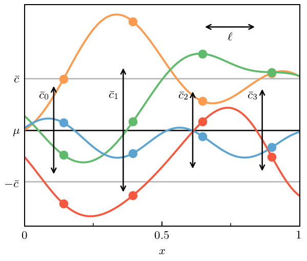
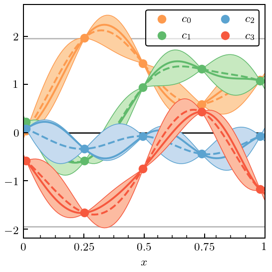

Correlated Truncation Errors in Effective Field Theory: The code behind the manuscript¶
This notebook provides the code to reproduce all of the plots from Melendez et al. (2019). A version with more commentary is forthcoming.
[1]:
%load_ext autoreload
%autoreload 2
import gsum as gm
import matplotlib as mpl
import matplotlib.pyplot as plt
import numpy as np
import scipy.stats as stats
import os
import h5py
from sklearn.gaussian_process.kernels import RBF, WhiteKernel
import urllib
import tables
%matplotlib inline
[2]:
# See: https://ianstormtaylor.com/design-tip-never-use-black/
softblack = '#262626'
mpl.rcParams['figure.dpi'] = 180
mpl.rcParams['font.size'] = 8
mpl.rcParams['text.usetex'] = True
mpl.rcParams['font.family'] = 'serif'
mpl.rcParams['axes.labelsize'] = 8
mpl.rcParams['axes.edgecolor'] = softblack
mpl.rcParams['axes.xmargin'] = 0
mpl.rcParams['axes.labelcolor'] = softblack
mpl.rcParams['axes.linewidth']
mpl.rcParams['ytick.direction'] = 'in'
mpl.rcParams['xtick.direction'] = 'in'
mpl.rcParams['xtick.labelsize'] = 8
mpl.rcParams['ytick.labelsize'] = 8
mpl.rcParams['xtick.color'] = softblack
mpl.rcParams['ytick.color'] = softblack
mpl.rcParams['xtick.minor.size'] = 2.5
mpl.rcParams['ytick.minor.size'] = 2.5
mpl.rcParams['legend.title_fontsize'] = 8
mpl.rcParams['legend.fontsize'] = 8
mpl.rcParams['legend.edgecolor'] = 'inherit' # inherits from axes.edgecolor, to match
mpl.rcParams['legend.facecolor'] = (1, 1, 1, 0.6) # Set facecolor with its own alpha, so edgecolor is unaffected
mpl.rcParams['legend.fancybox'] = True
mpl.rcParams['legend.borderaxespad'] = 0.8
mpl.rcParams['legend.framealpha'] = None # Do not set overall alpha (affects edgecolor). Handled by facecolor above
mpl.rcParams['patch.linewidth'] = 0.8 # This is for legend edgewidth, since it does not have its own option
text_bbox = dict(boxstyle='round', fc=(1, 1, 1, 0.6), ec=softblack, lw=0.8)
mpl.rc('savefig', transparent=True, bbox='tight', pad_inches=0.05)
[3]:
cmaps = [plt.get_cmap(name) for name in ['Oranges', 'Greens', 'Blues', 'Reds']]
colors = [cmap(0.55 - 0.1 * (i==0)) for i, cmap in enumerate(cmaps)]
light_colors = [cmap(0.25) for cmap in cmaps]
edgewidth = 0.6
Section II: The Model¶
Figure 1: Predictions to Coefficients¶
[4]:
x = np.linspace(0, 1, 100)
X = x[:, None]
n_orders = 4
orders = np.arange(0, n_orders)
final_order = 20 # To treat as true, converged result
orders_all = np.arange(0, final_order+1)
# The true values of the hyperparameters for generating data
ls = 0.2
sd = 1
center = 0
ref = 10
ratio = 0.5
nugget = 1e-10
seed = 3
# X_mask = np.array([i % 5 == 0 for i in range(len(X_all))])[:, None]
kernel = RBF(length_scale=ls, length_scale_bounds='fixed') + \
WhiteKernel(noise_level=nugget, noise_level_bounds='fixed')
gp = gm.ConjugateGaussianProcess(kernel=kernel, center=center, df=np.inf, scale=sd, nugget=0)
# Draw coefficients and then use `partials` to create the toy order-by-order EFT predictions
# Negative sign to make y_n positive, for aesthetics only
coeffs_all = - gp.sample_y(X, n_samples=final_order+1, random_state=seed)
data_all = gm.partials(coeffs_all, ratio, ref=ref, orders=orders_all)
diffs_all = np.array([data_all[:, 0], *np.diff(data_all, axis=1).T]).T
# Get the "all-orders" curve
data_true = data_all[:, -1]
# Will only consider "known" lower orders for most of the notebook
coeffs = coeffs_all[:, :n_orders]
data = data_all[:, :n_orders]
diffs = diffs_all[:, :n_orders]
[5]:
top_legend_kwargs = dict(
loc='lower left',
bbox_to_anchor=(0, 1.02, 1, 0.5), ncol=4,
borderpad=0.37,
labelspacing=0.,
handlelength=1.4,
handletextpad=0.4, borderaxespad=0,
edgecolor=softblack,
mode='expand',
fancybox=False
)
[6]:
fig, ax = plt.subplots(1, 1, figsize=(2.45, 2.6))
for i, curve in enumerate(data.T):
ax.plot(x, curve, label=r'$y_{}$'.format(i), c=colors[i])
ax.text(0.95, 0.95, 'Predictions', ha='right', va='top',
transform=ax.transAxes)
legend = ax.legend(**top_legend_kwargs)
# Format
ax.set_xlabel(r'$x$')
ax.set_xticks([0, 0.5, 1])
ax.set_xticks([0.25, 0.75], minor=True)
ax.set_xticklabels([0, 0.5, 1])
ax.set_xlim(0, 1)
fig.tight_layout()
fig.savefig('figures/Predictions_Only_{}.pdf'.format(n_orders-1))

[7]:
# Puts y at baseline, see
# https://matplotlib.org/2.2.2/gallery/text_labels_and_annotations/usetex_baseline_test.html
with plt.rc_context({"text.usetex": True, "text.latex.preview": True}):
fig, ax = plt.subplots(1, 1, figsize=(2.45, 2.6))
ax.axhline(0, lw=1, ls='--', c=softblack)
ax.plot(x, data[:, 0], label=r'$y_0$', c=colors[0])
for i in range(1, n_orders):
ax.plot(x, diffs[:, i], label=r'$\Delta y_{}$'.format(i), c=colors[i])
ax.text(0.95, 0.95, 'Differences', ha='right', va='top',
transform=ax.transAxes)
legend = ax.legend(**top_legend_kwargs)
# Format
ax.set_xlabel(r'$x$')
ax.set_xticks([0, 0.5, 1])
ax.set_xticks([0.25, 0.75], minor=True)
ax.set_xticklabels([0, 0.5, 1])
ax.set_xlim(0, 1)
fig.tight_layout()
plt.show() # Render before leaving rc_context
fig.savefig('figures/Differences_Only_{}.pdf'.format(n_orders-1))

[8]:
fig, ax = plt.subplots(1, 1, figsize=(2.45, 2.6))
for i in range(n_orders):
ax.plot(x, coeffs[:, i], label=r'$c_{}$'.format(i), c=colors[i])
ax.text(0.95, 0.95, 'Coefficients', ha='right', va='top',
transform=ax.transAxes)
legend = ax.legend(**top_legend_kwargs)
# Format
ax.set_xlabel(r'$x$')
ax.set_xticks([0, 0.5, 1])
ax.set_xticks([0.25, 0.75], minor=True)
ax.set_xticklabels([0, 0.5, 1])
ax.set_xlim(0, 1)
fig.tight_layout()
fig.savefig('figures/Coefficients_Only_{}.pdf'.format(n_orders-1))
Figure 3: Curvewise vs Pointwise Analysis¶
[9]:
fig, ax = plt.subplots(1, 1, figsize=(3.5, 3))
# Draw curves and points
mask = np.array([(i-14) % 25 == 0 for i in range(len(x))])
for i, c in enumerate(coeffs.T):
ax.plot(x, c, color=colors[i], zorder=0)
ax.plot(x[mask], c[mask], ls='', marker='o', color=colors[i])
for i, xi in enumerate(x[mask]):
# Fit a Gaussian to the orders at this x_i
sd_fit = stats.norm.fit(coeffs[mask][i], floc=0, shape=len(coeffs[mask]))[1]
# Draw a vertical arrow showing mean +/- sd
ax.annotate("", xy=(xi-0.035, sd_fit), xytext=(xi-0.035, -sd_fit),
arrowprops=dict(arrowstyle="<->", capstyle='projecting', lw=1, color=softblack), zorder=1)
ax.text(xi-0.065, 0.65, r'$\bar c_{}$'.format(i), horizontalalignment='center',
verticalalignment='center', zorder=1)
# Format plot
ax.axhline(0, 0, 1, c=softblack, lw=1, zorder=-1)
ax.axhline(1, 0, 1, c='lightgrey', lw=1, zorder=-1)
ax.axhline(-1, 0, 1, c='lightgrey', lw=1, zorder=-1)
ax.set_yticks([-1, 0, 1])
ax.set_yticklabels([r'$-\bar c$', r'$\mu$', r'$\bar c$'])
ax.tick_params(length=0, axis='y')
ax.set_xlabel(r'$x$')
ax.set_xticks([0, 0.5, 1])
ax.set_xticks([0.25, 0.75], minor=True)
ax.set_xticklabels([0, 0.5, 1])
fig.tight_layout();
fig.savefig('figures/annotated_gp_pointwise_combined.pdf')
Figure 4: Interpolation and Regression with Gaussian Processes¶
[10]:
regres_sd = 0.15
# Set up gp objects with fixed mean and standard deviation
gp_interp = gm.ConjugateGaussianProcess(
kernel=kernel, center=center, disp=0, df=np.inf, scale=sd, nugget=0)
gp_regres = gm.ConjugateGaussianProcess(
kernel=kernel, center=center, disp=0, df=np.inf,
scale=sd, nugget=regres_sd**2)
# Condition on data and make predictions
interp_idx = 1
gp_interp.fit(X[mask], coeffs[mask, [interp_idx]])
pred_interp, std_interp = gp_interp.predict(X, return_std=True)
regres_idx = 3
gp_regres.fit(X[mask], coeffs[mask, [regres_idx]])
pred_regres, std_regres = gp_regres.predict(X, return_std=True)
fig, ax = plt.subplots(figsize=(3.5, 3))
# Interpolating curve
ax.plot(x, coeffs[:, [interp_idx]], c=colors[interp_idx],
label=r'$c_{}$ ($\sigma_n = 0$)'.format(interp_idx), zorder=0)
ax.plot(x, pred_interp, c=colors[interp_idx], ls='--', zorder=0)
ax.plot(x[mask], coeffs[mask, interp_idx], ls='', marker='o', c=colors[interp_idx],
markersize=7, zorder=0)
ax.fill_between(x, pred_interp - 2*std_interp, pred_interp + 2*std_interp, facecolor=light_colors[interp_idx],
edgecolor=colors[interp_idx], lw=edgewidth, zorder=0)
# With noise
ax.plot(x, coeffs[:, [regres_idx]], c=colors[regres_idx],
label=r'$c_{}$ ($\sigma_n = 0.15$)'.format(regres_idx), zorder=1)
ax.plot(x, pred_regres, c=colors[regres_idx], ls='--', zorder=1)
ax.errorbar(x[mask], coeffs[mask, regres_idx], regres_sd, c=colors[regres_idx],
ls='', marker='o', markersize=7, zorder=2)
ax.fill_between(x, pred_regres - 2*std_regres, pred_regres + 2*std_regres, facecolor=light_colors[regres_idx],
edgecolor=colors[regres_idx], lw=edgewidth, zorder=1)
# Format plot
ax.set_xticks([0, 0.5, 1])
ax.set_xticks([0.25, 0.75], minor=True)
ax.set_xticklabels([0, 0.5, 1])
ax.set_xlabel(r'$x$')
ax.legend()
fig.tight_layout();
fig.savefig('figures/coeff_interp_and_noise_example.pdf')

Figure 5: GP Priors¶
[11]:
mean = 0
disp = 1
df = 15
tau2 = (df + 2) / df
gaussian_sd = np.sqrt(tau2*disp)
# Convert to inverse gamma
a = df / 2.
b = df * tau2 / 2.
gaus = stats.norm(mean, gaussian_sd)
igam = stats.invgamma(a, scale=b)
mu_vals = np.linspace(-2.1, 2.1, 100)
cbar_vals = np.linspace(0, 2, 100)
fig, ax = plt.subplots(1, 2, figsize=(3.4, 1.3))
# Plot curves
ax[0].plot(mu_vals, gaus.pdf(mu_vals))
ax[1].plot(cbar_vals, igam.pdf(cbar_vals))
# Add text boxes
ax[0].text(0.06, 0.87, r'pr($\mu \,|\, \bar c^2$)', ha='left', va='top',
transform=ax[0].transAxes,
bbox=text_bbox)
ax[1].text(0.06, 0.87, r'pr($\bar c^2$)', ha='left', va='top',
transform=ax[1].transAxes,
bbox=text_bbox
)
# Format plots
line_color = 'lightgrey'
ax[0].set_xlabel(r'Mean ($\mu$)', labelpad=4.5)
# ax[0].set_xlabel(r'Mean ($\mu$)')
ax[1].set_xlabel(r'Marginal Variance ($\bar c^2$)')
ax[0].set_yticks([])
ax[1].set_yticks([])
# plt.xlabel()
ax[0].axvline([mean], 0, 1, c=line_color, zorder=0, lw=1)
# ax[0].set_xticks([-gaussian_sd, mean, gaussian_sd])
# ax[0].set_xticklabels([r'$-\bar c\sqrt{V}$', r'$\eta$', r'$\bar c\sqrt{V}$'], va='bottom')
ax[0].set_xticks([mean])
ax[0].set_xticklabels([r'$\eta$'], va='bottom')
ax[0].tick_params(pad=12)
ax[0].arrow(0, gaus.pdf(gaussian_sd), gaussian_sd, 0, color=line_color, head_width=0., width=0.0001)
# ax[0].text(gaussian_sd+0.25, gaus.pdf(gaussian_sd), r'$\bar c\sqrt{V}$',
# verticalalignment='center', horizontalalignment='left')
ax[0].text(gaussian_sd/2, gaus.pdf(gaussian_sd)-.02, r'$\bar c\sqrt{V}$',
verticalalignment='top', horizontalalignment='center')
ax[1].axvline([df * tau2 / (df+2)], 0, 1, c=line_color, zorder=0, lw=1)
ax[1].set_xticks([0, df * tau2 / (df+2)])
ax[1].set_xticklabels([0, r'$\nu\tau^2/(\nu+2)$'], va='bottom')
ax[1].tick_params(pad=12)
fig.tight_layout(w_pad=0)
fig.savefig('figures/priors.pdf')
Figure 6: Applications¶
Inexpensive Systems¶
[12]:
trunc_gp = gm.TruncationGP(kernel=kernel, ref=ref, ratio=ratio, disp=0, df=np.inf, scale=1, optimizer=None)
trunc_gp.fit(X[mask], data[mask], orders=orders)
fig, axes = plt.subplots(2, 2, sharex=True, sharey=True, figsize=(2.37, 2.3))
for i, n in enumerate(orders):
_, std_trunc = trunc_gp.predict(X, order=n, return_std=True, kind='trunc')
for j in range(i, 4):
ax = axes.ravel()[j]
ax.plot(x, data[:, i], zorder=i-5, c=colors[i])
ax.fill_between(x, data[:, i] + 2*std_trunc, data[:, i] - 2*std_trunc,
zorder=i-5, facecolor=light_colors[i], edgecolor=colors[i], lw=edgewidth)
ax = axes.ravel()[i]
# ax.set_xticks([0.2, 0.4, 0.6, 0.8])
# ax.set_yticks([-10, 0, 10, 20, 30])
ax.set_xticks([])
ax.set_yticks([])
ax.set_ylim(-15, 37)
# Format
# axes[1, 0].set_xlabel(r'$x$')
# axes[1, 1].set_xlabel(r'$x$')
fig.tight_layout(h_pad=0.3, w_pad=0.3);
fig.savefig('figures/gps_plus_trunc_errors.pdf')

Expensive Systems¶
[13]:
trunc_gp_exp = gm.TruncationGP(kernel=kernel, ref=ref, ratio=ratio, disp=0, df=np.inf, scale=1, optimizer=None)
trunc_gp_exp.fit(X[mask], data[mask], orders=orders)
fig, axes = plt.subplots(2, 2, sharex=True, sharey=True, figsize=(2.37, 2.3))
for i, n in enumerate(orders):
pred_exp, std_trunc_exp = trunc_gp_exp.predict(X, order=n, return_std=True)
for j in range(i, 4):
ax = axes.ravel()[j]
ax.plot(x, pred_exp, zorder=i-5, c=colors[i])
ax.plot(x[mask], data[mask, i], ls='', c=colors[i], marker='o', zorder=i-5)
ax.fill_between(x, pred_exp + 2*std_trunc_exp, pred_exp- 2*std_trunc_exp,
zorder=i-5, facecolor=light_colors[i], edgecolor=colors[i], lw=edgewidth)
ax = axes.ravel()[i]
# ax.set_xticks([0.2, 0.4, 0.6, 0.8])
ax.set_xticks([])
# ax.set_yticks([-10, 0, 10, 20, 30])
ax.set_yticks([])
ax.set_ylim(-15, 37)
# Format
# axes[1, 0].set_xlabel(r'$x$')
# axes[1, 1].set_xlabel(r'$x$')
fig.tight_layout(h_pad=0.3, w_pad=0.3);
fig.savefig('figures/gps_interp_and_trunc_errors.pdf')
Constraints¶
[14]:
x2 = np.linspace(0, 1, 50)
X2 = x2[:, None]
kernel2 = RBF(length_scale=0.25) + WhiteKernel(noise_level=1e-7)
gp_constrained = gm.ConjugateGaussianProcess(kernel=kernel2, optimizer=None).fit([[0], [1]], [0, 0])
cn_constrained = gp_constrained.sample_y(X2, n_samples=n_orders, random_state=5)
yn_constrained = gm.partials(cn_constrained, ratio=ratio)
[15]:
def vertical_legend(line_list, fill_list, patch_length=12, pad=4, sep=3.2, ax=None):
"""A very messy way to create a vertical legend! Will clean up later"""
from matplotlib.offsetbox import TextArea, DrawingArea, VPacker
from matplotlib.collections import BrokenBarHCollection
import matplotlib.patches as mpatches
from matplotlib.offsetbox import AnchoredOffsetbox
if ax is None:
ax = plt.gca()
color_dict = {
"LOp": plt.get_cmap("Greys"),
"LO": plt.get_cmap("Purples"),
"NLO": plt.get_cmap("Oranges"),
"N2LO": plt.get_cmap("Greens"),
"N3LO": plt.get_cmap("Blues"),
"N4LO": plt.get_cmap("Reds")
}
ords = ['NLO', 'N2LO', 'N3LO', 'N4LO']
# cmaps = [plt.get_cmap(name) for name in ['Oranges', 'Greens', 'Blues', 'Reds']]
# line_col = 0.63
# band_col = 0.4
# line_list = [cm(line_col) for cm in cmaps]
# fill_list = [cm(band_col) for cm in cmaps]
p_decimal_list = [0.68, 0.95]
edge_list = ["none", "none"]
width_list = [0.5, 0.0]
hatch_list = ["", ""]
fill_transparency = 1
kw_list = []
for line_color, fill_colors in zip(line_list, fill_list):
kw_list.append(
{
"edgecolor": line_color,
"facecolor": fill_colors[1],
# label=order,
"linewidth": 1
}
)
word_boxes = []
orders_list = [r"$y_0$", r"$y_1$", r"$y_2$", r"$y_3$"]
for word in orders_list:
ta = TextArea(
word,
textprops=dict(color="k",
rotation=-90,
va="bottom",
ha="right",
rotation_mode="anchor",
size=8
),
)
word_boxes.append(
ta
)
patches_list = []
patch_width = 7
patch_height = 13
patch_x = 2 - patch_width/2
patch_y = 0
bar_start = -1
bar_light_width = 2.2
bar_dark_width = 1.3
bar_line_width = 0
for i, order in enumerate(ords):
hndls = BrokenBarHCollection(
xranges=(
(bar_start, 2*bar_light_width+2*bar_dark_width+bar_line_width),
(bar_start+bar_light_width, 2*bar_dark_width),
),
yrange=(0, patch_length),
# facecolors=(color_dict[order](1 / (len(p_decimal_list) + 1)),
# color_dict[order](2 / (len(p_decimal_list) + 1)),
# # color_dict[order](.99),
# color_dict[order](2 / (len(p_decimal_list) + 1)),
# color_dict[order](1 / (len(p_decimal_list) + 1))
# ),
# edgecolor=color_dict[order](.99),
facecolors=(fill_list[i],
line_list[i],
line_list[i],
fill_list[i]
),
edgecolor=line_list[i],
# edgewidth=.6,
linewidths=(0.4, 0),
antialiaseds=True
)
patches_list.append(
hndls
)
patch_boxes = []
for patch in patches_list:
patchbox = DrawingArea(4, patch_length, 0, 0)
patchbox.add_artist(patch)
patch_boxes.append(patchbox)
all_boxes = []
for i in range(len(patch_boxes)):
subbox = VPacker(children=[patch_boxes[i], word_boxes[i]], align="center",
pad=1, sep=5)
all_boxes.append(subbox)
# all_boxes.append(patch_boxes[i])
# all_boxes.append(word_boxes[i])
box = VPacker(children=all_boxes,
align="bottom",
pad=pad, sep=sep)
# return box
anchored_box = AnchoredOffsetbox(
loc=2,
child=box, pad=0.,
frameon=True,
bbox_to_anchor=(1.03, 1),
bbox_transform=ax.transAxes,
borderpad=0.
)
# anchored_box.patch.set_linewidth(0.8)
ax.add_artist(anchored_box)
return ax
[16]:
trunc_gp_sym = gm.TruncationGP(kernel=kernel2, ref=1, ratio=ratio, disp=0, df=np.inf, scale=1, optimizer=None)
trunc_gp_sym.fit(X2[::10], yn_constrained[::10], orders=orders, dX=np.array([[0], [1]]), dy=np.array([0, 0]))
fig, axes = plt.subplots(2, 2, sharex=True, sharey=True, figsize=(2.37, 2.3)
)
for i, n in enumerate(orders):
_, std_sym = trunc_gp_sym.predict(X2, order=n, return_std=True, kind='trunc')
for j in range(i, 4):
ax = axes.ravel()[j]
ax.plot(x2, yn_constrained[:, i], zorder=i-5, c=colors[i])
ax.fill_between(x2, yn_constrained[:, i] + 2*std_sym, yn_constrained[:, i] - 2*std_sym,
zorder=i-5, facecolor=light_colors[i], edgecolor=colors[i], lw=edgewidth)
ax = axes.ravel()[i]
ax.axhline(0, 0, 1, ls='--', lw=0.5, c=softblack, zorder=0)
# ax.set_xticks([0.2, 0.4, 0.6, 0.8])
ax.set_xticks([])
ax.set_yticks([])
# Format
# axes[1, 0].set_xlabel(r'$x$')
# axes[1, 1].set_xlabel(r'$x$')
# plt.subplots_adjust(wspace=0.03, hspace=0.03)
fig.tight_layout(h_pad=0.3, w_pad=0.3);
vertical_legend(colors, light_colors, patch_length=15, sep=7, ax=axes[0, 1])
# anchored_box = AnchoredOffsetbox(
# loc=2,
# child=vbox, pad=0.,
# frameon=True,
# bbox_to_anchor=(1.03, 1),
# bbox_transform=axes[0, 1].transAxes,
# borderpad=0.
# )
# # anchored_box.patch.set_linewidth(0.8)
# axes[0, 1].add_artist(anchored_box)
# fig.tight_layout(h_pad=0.3, w_pad=0.3);
fig.savefig('figures/gps_with_sym_constraints_and_errors.pdf')

Section III: Diagnostics¶
Figure 7¶
[17]:
MD_label = r'$\mathrm{D}_{\mathrm{MD}}^2$'
PC_label = r'$\mathrm{D}_{\mathrm{PC}}$'
[18]:
def regular_train_test_split(x, dx_train, dx_test, offset_train=0, offset_test=0, xmin=None, xmax=None):
train_mask = np.array([(i - offset_train) % dx_train == 0 for i in range(len(x))])
test_mask = np.array([(i - offset_test) % dx_test == 0 for i in range(len(x))])
if xmin is None:
xmin = np.min(x)
if xmax is None:
xmax = np.max(x)
train_mask = train_mask & (x >= xmin) & (x <= xmax)
test_mask = test_mask & (x >= xmin) & (x <= xmax) & (~ train_mask)
return train_mask, test_mask
[19]:
x_train_mask, x_valid_mask = regular_train_test_split(
x, dx_train=24, dx_test=6, offset_train=1, offset_test=1)
# Hyperparameters
center0 = 0
disp0 = 0
df0 = 1
scale0 = 1
[20]:
kernel_fit = RBF(length_scale=ls) + WhiteKernel(noise_level=nugget, noise_level_bounds='fixed')
gp_diagnostic = gm.ConjugateGaussianProcess(kernel=kernel_fit, center=center0, disp=disp0, df=df0, scale=scale0)
gp_diagnostic.fit(X[x_train_mask], coeffs[x_train_mask])
pred, std = gp_diagnostic.predict(X, return_std=True)
underlying_std = np.sqrt(gp_diagnostic.cov_factor_)
fig, ax = plt.subplots(figsize=(3.2, 3.2))
for i, n in enumerate(orders):
ax.plot(x, pred[:, i], c=colors[i], zorder=i-5, ls='--')
ax.plot(x, coeffs[:, i], c=colors[i], zorder=i-5)
ax.plot(x[x_train_mask], coeffs[x_train_mask, i], c=colors[i], zorder=i-5, ls='', marker='o',
label=r'$c_{}$'.format(n))
ax.fill_between(x, pred[:, i] + 2*std, pred[:, i] - 2*std, zorder=i-5,
facecolor=light_colors[i], edgecolor=colors[i], lw=edgewidth, alpha=1)
# Format
ax.axhline(2*underlying_std, 0, 1, c='lightgrey', zorder=-10, lw=1)
ax.axhline(-2*underlying_std, 0, 1, c='lightgrey', zorder=-10, lw=1)
ax.axhline(0, 0, 1, c=softblack, zorder=-10, lw=1)
ax.set_xticks(x[x_valid_mask], minor=True)
ax.set_xlabel(r'$x$')
ax.set_xticks([0, 0.25, 0.5, 0.75, 1])
ax.set_xticklabels([0, 0.25, 0.5, 0.75, 1])
ax.tick_params(which='minor', bottom=False, top=True)
ax.legend(ncol=2)
fig.tight_layout();
fig.savefig('figures/toy_interp_and_underlying_processes.pdf')

[21]:
mean_underlying = gp_diagnostic.mean(X[x_valid_mask])
cov_underlying = gp_diagnostic.cov(X[x_valid_mask])
gdgn = gm.GraphicalDiagnostic(coeffs[x_valid_mask], mean_underlying, cov_underlying, colors=colors)
[22]:
gp_diagnostic.kernel_
[22]:
RBF(length_scale=0.199) + WhiteKernel(noise_level=1e-10)
[23]:
def offset_xlabel(ax):
ax.set_xticks([0])
ax.set_xticklabels(labels=[0], fontdict=dict(color='w'))
ax.tick_params(axis='x', length=0)
return ax
[24]:
fig, ax = plt.subplots(figsize=(1, 3.2))
ax = gdgn.md_squared(type='box', trim=False, title=None, xlabel=MD_label)
offset_xlabel(ax)
ax.set_ylim(0, 25)
fig.tight_layout();
fig.savefig('figures/toy_md_true_Q.pdf')

[25]:
with plt.rc_context({"text.usetex": True, "text.latex.preview": True}):
fig, ax = plt.subplots(figsize=(3.2, 3.2))
gdgn.pivoted_cholesky_errors(ax=ax, title=None)
ax.set_xticks([2, 4, 6, 8, 10, 12])
ax.set_xticks([1, 3, 5, 7, 9, 11], minor=True)
ax.text(0.05, 0.965, PC_label, bbox=text_bbox, transform=ax.transAxes, va='top', ha='left')
fig.tight_layout();
plt.show()
fig.savefig('figures/toy_pc_vs_index_true_Q.pdf')

Figure 8:¶
[26]:
gp_trunc = gm.TruncationGP(kernel=kernel_fit, ref=ref, ratio=ratio, center=center0, disp=disp0, df=df0, scale=scale0)
gp_trunc.fit(X[x_train_mask], y=data[x_train_mask], orders=orders)
[26]:
<gsum.models.TruncationGP at 0x1a282a0390>
[27]:
fig, axes = plt.subplots(2, 2, sharex=True, sharey=True, figsize=(3.9, 3.2))
for i, n in enumerate(orders):
_, std_trunc = gp_trunc.predict(X, order=n, return_std=True, kind='trunc')
for j in range(i, 4):
ax = axes.ravel()[j]
ax.plot(x, data[:, i], zorder=i-5, c=colors[i])
ax.fill_between(x, data[:, i] + 2*std_trunc, data[:, i] - 2*std_trunc,
zorder=i-5, facecolor=light_colors[i], edgecolor=colors[i], lw=edgewidth)
ax = axes.ravel()[i]
ax.plot(x, data_true, color=softblack, lw=1, ls='--')
# ax.set_xticks([0.2, 0.4, 0.6, 0.8])
ax.set_xticks([0.25, 0.5, 0.75])
ax.set_xticklabels([0.25, 0.5, 0.75])
ax.set_yticks([0, 10, 20])
ax.set_yticks([-10, 0, 10, 20, 30])
ax.set_ylim(-15, 37)
# Format
axes[1, 0].set_xlabel(r'$x$')
axes[1, 1].set_xlabel(r'$x$')
fig.tight_layout(h_pad=0.3, w_pad=0.3);
fig.savefig('figures/toy_truncation_error_bands.pdf')

[28]:
norm_trunc_cov = gp_trunc.cov(X[x_valid_mask], start=0, end=0)
norm_residuals = (data_true[x_valid_mask, None] - data[x_valid_mask]) / (ratio**(orders+1) / np.sqrt(1 - ratio**2))
gr_dgn_trunc = gm.GraphicalDiagnostic(norm_residuals, mean=np.zeros(x[x_valid_mask].shape[0]), cov=norm_trunc_cov, colors=colors)
[29]:
fig, ax = plt.subplots(figsize=(3.4, 3.2))
gr_dgn_trunc.credible_interval(
np.linspace(1e-5, 1, 100), band_perc=[0.68, 0.95], ax=ax, title=None,
xlabel=r'Credible Interval ($100\alpha\%$)', ylabel=r'Empirical Coverage ($\%$)')
ax.set_xticks([0, 0.2, 0.4, 0.6, 0.8, 1])
ax.set_xticklabels([0, 20, 40, 60, 80, 100])
ax.set_yticks([0, 0.2, 0.4, 0.6, 0.8, 1])
ax.set_yticklabels([0, 20, 40, 60, 80, 100])
fig.tight_layout();
fig.savefig('figures/toy_truncation_error_credible_intervals.pdf')

Figure 9: The \(Q\) and \(\ell\) Posterior¶
[30]:
ls_vals = np.linspace(1e-3, 0.5, 100)
ratio_vals = np.linspace(0.3, 0.7, 80)
[31]:
ls_ratio_loglike = np.array([[
gp_trunc.log_marginal_likelihood(theta=[ls_,], ratio=ratio_val) for ls_ in np.log(ls_vals)]
for ratio_val in ratio_vals
])
[32]:
ls_ratio_like = np.exp(ls_ratio_loglike - np.max(ls_ratio_loglike))
ratio_like = np.trapz(ls_ratio_like, x=ls_vals, axis=-1)
ls_like = np.trapz(ls_ratio_like, x=ratio_vals, axis=0)
# Normalize them
ratio_like /= np.trapz(ratio_like, x=ratio_vals, axis=0)
ls_like /= np.trapz(ls_like, x=ls_vals, axis=0)
[33]:
def joint_plot(ratio=1, height=3):
"""Taken from Seaborn JointGrid"""
fig = plt.figure(figsize=(height, height))
gsp = plt.GridSpec(ratio+1, ratio+1)
ax_joint = fig.add_subplot(gsp[1:, :-1])
ax_marg_x = fig.add_subplot(gsp[0, :-1], sharex=ax_joint)
ax_marg_y = fig.add_subplot(gsp[1:, -1], sharey=ax_joint)
# Turn off tick visibility for the measure axis on the marginal plots
plt.setp(ax_marg_x.get_xticklabels(), visible=False)
plt.setp(ax_marg_y.get_yticklabels(), visible=False)
# Turn off the ticks on the density axis for the marginal plots
plt.setp(ax_marg_x.yaxis.get_majorticklines(), visible=False)
plt.setp(ax_marg_x.yaxis.get_minorticklines(), visible=False)
plt.setp(ax_marg_y.xaxis.get_majorticklines(), visible=False)
plt.setp(ax_marg_y.xaxis.get_minorticklines(), visible=False)
plt.setp(ax_marg_x.get_yticklabels(), visible=False)
plt.setp(ax_marg_y.get_xticklabels(), visible=False)
ax_marg_x.yaxis.grid(False)
ax_marg_y.xaxis.grid(False)
# Make the grid look nice
from seaborn import utils
# utils.despine(fig)
utils.despine(ax=ax_marg_x, left=True)
utils.despine(ax=ax_marg_y, bottom=True)
fig.tight_layout(h_pad=0, w_pad=0)
ax_marg_y.tick_params(axis='y', which='major', direction='out')
ax_marg_x.tick_params(axis='x', which='major', direction='out')
ax_marg_y.tick_params(axis='y', which='minor', direction='out')
ax_marg_x.tick_params(axis='x', which='minor', direction='out')
ax_marg_y.margins(x=0.1, y=0.)
fig.subplots_adjust(hspace=0, wspace=0)
return fig, ax_joint, ax_marg_x, ax_marg_y
[34]:
with plt.rc_context({"text.usetex": True, "text.latex.preview": True}):
cmap_name = 'Blues'
cmap = mpl.cm.get_cmap(cmap_name)
# Setup axes
fig, ax_joint, ax_marg_x, ax_marg_y = joint_plot(ratio=5, height=3.4)
# Plot contour
ax_joint.contour(ls_vals, ratio_vals, ls_ratio_like,
levels=[np.exp(-0.5*r**2) for r in np.arange(9, 0, -0.5)] + [0.999],
cmap=cmap_name, vmin=-0.05, vmax=0.8, zorder=1)
# Now plot the marginal distributions
ax_marg_y.plot(ratio_like, ratio_vals, c=cmap(0.8), lw=1)
ax_marg_y.fill_betweenx(ratio_vals, np.zeros_like(ratio_like),
ratio_like, facecolor=cmap(0.2), lw=1)
ax_marg_x.plot(ls_vals, ls_like, c=cmap(0.8), lw=1)
ax_marg_x.fill_between(ls_vals, np.zeros_like(ls_vals),
ls_like, facecolor=cmap(0.2), lw=1)
# Formatting
ax_joint.set_xlabel(r'$\ell$')
ax_joint.set_ylabel(r'$Q$')
ax_joint.axvline(ls, 0, 1, c='lightgrey', lw=1, zorder=0)
ax_joint.axhline(ratio, 0, 1, c='lightgrey', lw=1, zorder=0)
ax_joint.margins(x=0, y=0.)
ax_joint.set_xlim(0.05, 0.35)
ax_joint.set_xticks([0.1, 0.2, 0.3])
ax_joint.set_xticks([0.15, 0.25], minor=True)
ax_joint.set_yticks([0.4, 0.5, 0.6])
ax_joint.set_yticks([0.35, 0.45, 0.55, 0.65], minor=True)
ax_marg_x.set_ylim(bottom=0);
ax_marg_y.set_xlim(left=0);
ax_joint.text(0.95, 0.95, r'pr$(\ell, Q \,|\, \vec{\mathbf{y}}_k)$', ha='right', va='top',
transform=ax_joint.transAxes,
bbox=text_bbox
);
plt.show()
fig.savefig('figures/Q_ell_jointplot.pdf')

Figure 10: Misestimated \(Q\)¶
[35]:
coeffs_wrong = gm.coefficients(data, ratio=0.3, ref=ref, orders=orders)
gp_diagnostic_wrong = gm.ConjugateGaussianProcess(kernel=kernel_fit, center=center0, disp=disp0, df=df0, scale=scale0)
gp_diagnostic_wrong.fit(X[x_train_mask], coeffs_wrong[x_train_mask])
pred, std = gp_diagnostic_wrong.predict(X, return_std=True)
underlying_std = np.sqrt(gp_diagnostic_wrong.cov_factor_)
fig, ax = plt.subplots(figsize=(3.2, 3.2))
for i, n in enumerate(orders):
ax.plot(x, pred[:, i], c=colors[i], zorder=i-5, ls='--')
ax.plot(x, coeffs_wrong[:, i], c=colors[i], zorder=i-5)
ax.plot(x[x_train_mask], coeffs_wrong[x_train_mask, i], c=colors[i], zorder=i-5, ls='', marker='o',
label=r'$c_{}$'.format(n))
ax.fill_between(x, pred[:, i] + 2*std, pred[:, i] - 2*std, zorder=i-5,
facecolor=light_colors[i], edgecolor=colors[i], lw=edgewidth, alpha=1)
# Format
ax.axhline(2*underlying_std, 0, 1, c='lightgrey', zorder=-10, lw=1)
ax.axhline(-2*underlying_std, 0, 1, c='lightgrey', zorder=-10, lw=1)
ax.axhline(0, 0, 1, c=softblack, zorder=-10, lw=1)
ax.set_xticks(x[x_valid_mask], minor=True)
ax.tick_params(which='minor', bottom=False, top=True)
ax.set_xlabel(r'$x$')
ax.set_xticks([0, 0.25, 0.5, 0.75, 1])
ax.set_xticklabels([0, 0.25, 0.5, 0.75, 1])
ax.legend(ncol=2)
fig.tight_layout();
fig.savefig('figures/toy_interp_and_underlying_processes_small_Q.pdf')

[36]:
gp_diagnostic_wrong.kernel_
[36]:
RBF(length_scale=0.175) + WhiteKernel(noise_level=1e-10)
[37]:
mean_wrong = gp_diagnostic_wrong.mean(X[x_valid_mask])
cov_wrong = gp_diagnostic_wrong.cov(X[x_valid_mask])
pred_wrong = gp_diagnostic_wrong.predict(X[x_valid_mask])
gr_dgn_wrong = gm.GraphicalDiagnostic(pred_wrong, mean=mean_wrong, cov=cov_wrong, colors=colors)
[38]:
fig, ax = plt.subplots(figsize=(1, 3.2))
gr_dgn_wrong.md_squared(type='box', trim=False, title=None, xlabel=MD_label)
offset_xlabel(ax)
ax.set_ylim(0, 25)
ax.set_yticks([0, 5, 10, 15, 20, 25])
fig.tight_layout();
fig.savefig('figures/toy_md_small_Q.pdf')

[39]:
with plt.rc_context({"text.usetex": True, "text.latex.preview": True}):
fig, ax = plt.subplots(figsize=(3.2, 3.2))
gr_dgn_wrong.pivoted_cholesky_errors(ax=ax, title=None)
ax.set_xticks([2, 4, 6, 8, 10, 12])
ax.set_xticks([1, 3, 5, 7, 9, 11], minor=True)
ax.text(0.05, 0.95, PC_label, bbox=text_bbox, transform=ax.transAxes, va='top', ha='left')
fig.tight_layout();
plt.show()
fig.savefig('figures/toy_pc_vs_index_small_Q.pdf')

NN Scattering in Chiral EFT¶
[40]:
# Constants: proton/neutron masses and hbar
m_p = 938.27208 # MeV/c^2
m_n = 939.56541 # MeV/c^2
hbarc = 197.33 # Mev-fm
def E_to_p(E_lab, interaction):
"""Return p in MeV.
Parameters
----------
energy = float
lab energy given in MeV.
interaction = str
{"pp", "nn", "np"}
"""
if interaction == "pp":
m1, m2 = m_p, m_p
if interaction == "nn":
m1, m2 = m_n, m_n
if interaction == "np":
m1, m2 = m_n, m_p
p_rel = np.sqrt(
E_lab * m2**2 * (E_lab + 2 * m1) /
((m1 + m2)**2 + 2 * m2 * E_lab)
)
return p_rel
def Q_approx(E, Lambda_b, interaction='np', single_expansion=False):
if single_expansion:
m_pi = 0
else:
m_pi = 138 # Set to 0 to just return p/Lambda_b
# Interpolate to smooth the transition from m_pi to p
n = 8
p = E_to_p(E, interaction)
q = (m_pi**n + p**n) / (m_pi**(n-1) + p**(n-1)) / Lambda_b
return q
[41]:
nn_url = 'https://github.com/buqeye/buqeyebox/blob/master/nn_scattering/scattering_observables_EKM_R-0p9fm.h5?raw=true'
response = urllib.request.urlopen(nn_url)
h5file = tables.open_file("nn_observables_eft.h5", driver="H5FD_CORE",
driver_core_image=response.read(),
driver_core_backing_store=0)
SGT = h5file.get_node('/SGT').read()
DSG = h5file.get_node('/DSG').read()
AY = h5file.get_node('/PB').read()
A = h5file.get_node('/A').read()
D = h5file.get_node('/D').read()
AXX = h5file.get_node('/AXX').read()
AYY = h5file.get_node('/AYY').read()
q_cm = h5file.get_node('/q_cm').read()
t_lab = h5file.get_node('/t_lab').read()
degrees = h5file.get_node('/degrees').read()
q_cm *= hbarc
nn_online_pot = 'pwa93'
nn_online_url = 'https://github.com/buqeye/buqeyebox/blob/master/nn_scattering/NN-online-Observables.h5?raw=true'
nno_response = urllib.request.urlopen(nn_online_url)
nn_online_file = tables.open_file("nn_online_example.h5", driver="H5FD_CORE",
driver_core_image=nno_response.read(),
driver_core_backing_store=0)
SGT_nn_online = nn_online_file.get_node('/' + nn_online_pot + '/SGT').read()
DSG_nn_online = nn_online_file.get_node('/' + nn_online_pot + '/DSG').read()[:, :-1]
AY_nn_online = nn_online_file.get_node('/' + nn_online_pot + '/PB').read()[:, :-1]
A_nn_online = nn_online_file.get_node('/' + nn_online_pot + '/A').read()[:, :-1]
D_nn_online = nn_online_file.get_node('/' + nn_online_pot + '/D').read()[:, :-1]
AXX_nn_online = nn_online_file.get_node('/' + nn_online_pot + '/AXX').read()[:, :-1]
AYY_nn_online = nn_online_file.get_node('/' + nn_online_pot + '/AYY').read()[:, :-1]
[42]:
nn_orders = np.array([0, 2, 3, 4, 5])
excluded = [0]
nn_orders_mask = ~ np.isin(nn_orders, excluded)
Deg = degrees[:, None]
Lambdab = 600
Figure 11: Differential Cross Section¶
[43]:
t_lab_dsg = 150
t_lab_idx_dsg = np.nonzero(t_lab_dsg == t_lab)[0][0]
q_cm_dsg = q_cm[t_lab_idx_dsg]
deg_train_mask_dsg, deg_valid_mask_dsg = regular_train_test_split(degrees, dx_train=30, dx_test=10)
# deg_train_mask_dsg, deg_valid_mask_dsg = regular_train_test_split(degrees, dx_train=42, dx_test=14, xmax=170)
# deg_train_mask_dsg, deg_valid_mask_dsg = regular_train_test_split(degrees, dx_train=40, dx_test=10,
# offset_train=5, offset_test=5, xmax=170)
# deg_train_mask_dsg, deg_valid_mask_dsg = regular_train_test_split(degrees, dx_train=30, dx_test=10, xmax=170)
ratio_dsg = Q_approx(t_lab_dsg, Lambda_b=Lambdab)
dsg_train = DSG.T[deg_train_mask_dsg, t_lab_idx_dsg]
dsg_valid = DSG.T[deg_valid_mask_dsg, t_lab_idx_dsg]
dsg_vs_theta = DSG.T[:, t_lab_idx_dsg]
dsg_ref = dsg_vs_theta[:, -1]
coeffs_dsg = gm.coefficients(dsg_vs_theta, ratio=ratio_dsg, ref=dsg_ref, orders=nn_orders)[:, nn_orders_mask]
kernel_dsg = RBF(length_scale=40, length_scale_bounds=(20, 60)) + WhiteKernel(1e-10, noise_level_bounds='fixed')
gp_dsg = gm.ConjugateGaussianProcess(
kernel_dsg, center=center0, disp=disp0, df=df0,
scale=1, n_restarts_optimizer=10)
[44]:
gp_dsg.fit(Deg[deg_train_mask_dsg], coeffs_dsg[deg_train_mask_dsg])
pred, std = gp_dsg.predict(Deg, return_std=True)
underlying_std = np.sqrt(gp_dsg.cov_factor_)
fig, ax = plt.subplots(figsize=(3.2, 3.2))
for i, n in enumerate(nn_orders[1:]):
ax.plot(degrees, pred[:, i], c=colors[i], zorder=i-5, ls='--')
ax.plot(degrees, coeffs_dsg[:, i], c=colors[i], zorder=i-5)
ax.plot(degrees[deg_train_mask_dsg], coeffs_dsg[deg_train_mask_dsg, i], c=colors[i], zorder=i-5,
ls='', marker='o', label=r'$c_{}$'.format(n))
ax.fill_between(degrees, pred[:, i] + 2*std, pred[:, i] - 2*std, zorder=i-5,
facecolor=light_colors[i], edgecolor=colors[i], lw=edgewidth, alpha=1)
# Format
ax.axhline(2*underlying_std, 0, 1, c='lightgrey', zorder=-10, lw=1)
ax.axhline(-2*underlying_std, 0, 1, c='lightgrey', zorder=-10, lw=1)
ax.axhline(0, 0, 1, c=softblack, zorder=-10, lw=1)
ax.set_xticks(degrees[deg_valid_mask_dsg], minor=True)
ax.set_xticks([30, 60, 90, 120, 150])
ax.tick_params(which='minor', bottom=False, top=True)
ax.set_xlabel(r'$\theta$ (deg)')
ax.legend(ncol=2, borderpad=0.4,# labelspacing=0.5, columnspacing=1.3,
title=r'$\sigma(\theta, E_{\mathrm{lab}}=150\,\mathrm{MeV})$')
fig.tight_layout();
fig.savefig('figures/dsg_interp_and_underlying_processes.pdf')
[45]:
gp_dsg.kernel_
[45]:
RBF(length_scale=34) + WhiteKernel(noise_level=1e-10)
[46]:
mean_dsg = gp_dsg.mean(Deg[deg_valid_mask_dsg])
cov_dsg = gp_dsg.cov(Deg[deg_valid_mask_dsg])
gr_dgn_dsg = gm.GraphicalDiagnostic(coeffs_dsg[deg_valid_mask_dsg], mean_dsg, cov_dsg, colors=colors)
[47]:
fig, ax = plt.subplots(figsize=(1, 3.2))
gr_dgn_dsg.md_squared(type='box', trim=False, title=None, xlabel=MD_label)
offset_xlabel(ax)
ax.set_ylim(0, 90)
fig.tight_layout();
fig.savefig('figures/dsg_md.pdf')

[48]:
with plt.rc_context({"text.usetex": True, "text.latex.preview": True}):
fig, ax = plt.subplots(figsize=(3.2, 3.2))
gr_dgn_dsg.pivoted_cholesky_errors(ax=ax, title=None)
ax.set_xticks([2, 4, 6, 8, 10, 12])
ax.set_xticks([1, 3, 5, 7, 9, 11], minor=True)
ax.text(0.05, 0.95, PC_label, bbox=text_bbox, transform=ax.transAxes, va='top', ha='left')
ax.set_ylim(-6, 6)
# ax.set_yticks([-4, -2, 0, 2, 4])
fig.tight_layout();
plt.show()
fig.savefig('figures/dsg_pc_vs_index.pdf')

Figure 12: Total Cross Section¶
[49]:
tlab_train_mask_sgt, tlab_valid_mask_sgt = regular_train_test_split(t_lab, dx_train=100, dx_test=25, xmin=100)
ratio_sgt = Q_approx(t_lab, Lambda_b=Lambdab)
Tlab = t_lab[:, None]
sgt_train = SGT.T[tlab_train_mask_sgt]
sgt_valid = SGT.T[tlab_valid_mask_sgt]
sgt_ref = SGT[0]
coeffs_sgt = gm.coefficients(SGT.T, ratio=ratio_sgt, ref=sgt_ref, orders=nn_orders)[:, nn_orders_mask]
kernel_sgt = RBF(length_scale=100, length_scale_bounds=(60, 150)) + WhiteKernel(1e-10, noise_level_bounds='fixed')
gp_sgt = gm.ConjugateGaussianProcess(
kernel_sgt, center=center0, disp=disp0, df=df0,
scale=1, n_restarts_optimizer=10)
[50]:
gp_sgt.fit(Tlab[tlab_train_mask_sgt], coeffs_sgt[tlab_train_mask_sgt])
pred, std = gp_sgt.predict(Tlab, return_std=True)
underlying_std = np.sqrt(gp_sgt.cov_factor_)
fig, ax = plt.subplots(figsize=(3.2, 3.2))
for i, n in enumerate(nn_orders[1:]):
ax.plot(t_lab, pred[:, i], c=colors[i], zorder=i-5, ls='--')
ax.plot(t_lab, coeffs_sgt[:, i], c=colors[i], zorder=i-5)
ax.plot(t_lab[tlab_train_mask_sgt], coeffs_sgt[tlab_train_mask_sgt, i], c=colors[i], zorder=i-5,
ls='', marker='o', label=r'$c_{}$'.format(n))
ax.fill_between(t_lab, pred[:, i] + 2*std, pred[:, i] - 2*std, zorder=i-5,
facecolor=light_colors[i], edgecolor=colors[i], lw=edgewidth, alpha=1)
# Format
ax.axhline(2*underlying_std, 0, 1, c='lightgrey', zorder=-10, lw=1)
ax.axhline(-2*underlying_std, 0, 1, c='lightgrey', zorder=-10, lw=1)
ax.axhline(0, 0, 1, c=softblack, zorder=-10, lw=1)
ax.set_xticks(t_lab[tlab_valid_mask_sgt], minor=True)
ax.tick_params(which='minor', bottom=False, top=True)
ax.set_xticks([0, 100, 200, 300])
ax.set_xlabel(r'$E_{\mathrm{lab}}$ (MeV)')
ax.legend(ncol=2, title=r'$\sigma_{\mathrm{tot}}(E_{\mathrm{lab}})$')
fig.tight_layout();
fig.savefig('figures/sgt_interp_and_underlying_processes_large_tlab.pdf')

[51]:
gp_sgt.kernel_
[51]:
RBF(length_scale=131) + WhiteKernel(noise_level=1e-10)
[52]:
mean_sgt = gp_sgt.mean(Tlab[tlab_valid_mask_sgt])
cov_sgt = gp_sgt.cov(Tlab[tlab_valid_mask_sgt])
gr_dgn_sgt = gm.GraphicalDiagnostic(coeffs_sgt[tlab_valid_mask_sgt], mean_sgt, cov_sgt, colors=colors)
[53]:
fig, ax = plt.subplots(figsize=(1, 3.2))
gr_dgn_sgt.md_squared(type='box', trim=False, title=None, xlabel=MD_label)
offset_xlabel(ax)
ax.set_ylim(0, 50)
fig.tight_layout();
fig.savefig('figures/sgt_md_large_tlab.pdf')

[54]:
with plt.rc_context({"text.usetex": True, "text.latex.preview": True}):
fig, ax = plt.subplots(figsize=(3.2, 3.2))
gr_dgn_sgt.pivoted_cholesky_errors(ax=ax, title=None)
ax.set_xticks([2, 4, 6], minor=True)
ax.set_xticks([1, 3, 5, 7])
ax.text(0.05, 0.95, PC_label, bbox=text_bbox, transform=ax.transAxes, va='top', ha='left')
fig.tight_layout();
plt.show()
fig.savefig('figures/sgt_pc_vs_index_large_tlab.pdf')

Figure 13: Spin Observable \(A\)¶
[55]:
t_lab_A = 96
t_lab_idx_A = np.nonzero(t_lab_A == t_lab)[0][0]
q_cm_A = q_cm[t_lab_idx_A]
degrees_train_mask_A, degrees_valid_mask_A = regular_train_test_split(degrees, dx_train=40, dx_test=10)
ratio_A = Q_approx(t_lab_A, Lambda_b=Lambdab)
A_train = A.T[degrees_train_mask_A, t_lab_idx_A]
A_valid = A.T[degrees_valid_mask_A, t_lab_idx_A]
A_vs_theta = A.T[:, t_lab_idx_A]
coeffs_A = gm.coefficients(A_vs_theta, ratio=ratio_A, orders=nn_orders)
kernel_A = RBF(length_scale=30) + WhiteKernel(nugget, noise_level_bounds='fixed')
[56]:
gp_coeffs_A = gm.ConjugateGaussianProcess(kernel=kernel_A, center=center0, disp=disp0, df=df0, scale=scale0)
gp_coeffs_A.fit(Deg[degrees_train_mask_A], coeffs_A[degrees_train_mask_A, 1:])
pred, std = gp_coeffs_A.predict(Deg, return_std=True)
underlying_std = np.sqrt(gp_coeffs_A.cov_factor_)
dX_A = np.array([[0]])
std_interp = np.sqrt(np.diag(
gp_coeffs_A.cov(Deg) -
gp_coeffs_A.cov(Deg, dX_A) @ np.linalg.solve(gp_coeffs_A.cov(dX_A, dX_A), gp_coeffs_A.cov(dX_A, Deg))
))
fig, ax = plt.subplots(figsize=(2.45, 2.5))
for i, n in enumerate(nn_orders[1:]):
ax.plot(degrees, coeffs_A[:, i+1], c=colors[i], zorder=i-5)
ax.plot(degrees[degrees_train_mask_A], coeffs_A[degrees_train_mask_A, i+1], c=colors[i],
zorder=i-5, ls='', marker='o', label=r'$c_{n}$'.format(n=n))
# Format
ax.axhline(2*underlying_std, 0, 1, c='lightgrey', zorder=-10, lw=1)
ax.axhline(-2*underlying_std, 0, 1, c='lightgrey', zorder=-10, lw=1)
ax.plot(degrees, 2*std_interp, color='grey', ls='--', zorder=-10, lw=1)
ax.plot(degrees, -2*std_interp, color='grey', ls='--', zorder=-10, lw=1)
ax.axhline(0, 0, 1, c=softblack, zorder=-10, lw=1)
ax.tick_params(which='minor', bottom=False, top=True)
ax.set_xlabel(r'$\theta$ (deg)')
ax.set_xticks([0, 40, 80, 120, 160])
ax.set_ylim(-5, 5)
leg = ax.legend(ncol=2, borderpad=0.4, columnspacing=0.8)
# leg.legendPatch.set_facecolor('none')
ax.text(0.05, 0.96, r'$A(\theta)$', transform=ax.transAxes, va='top',
bbox=dict(boxstyle="round", ec=softblack, fc='white', lw=0.8))
fig.tight_layout();
fig.savefig('figures/spin_obs_A_coefficients.pdf')
[57]:
gp_A = gm.TruncationGP(kernel_A, ref=1, ratio=ratio_A, center=center0, disp=disp0, df=df0, scale=scale0, excluded=excluded)
[58]:
gp_A.fit(degrees[degrees_train_mask_A][:, None], A_train, orders=nn_orders)
fig, axes = plt.subplots(2, 2, sharex=True, sharey=True, figsize=(2.45, 2.5))
for i, n in enumerate(nn_orders[1:]):
_, std_trunc = gp_A.predict(degrees[:, None], order=n, return_std=True, kind='trunc')
for j in range(i, 4):
ax = axes.ravel()[j]
ax.plot(degrees, A_vs_theta[:, i+1], zorder=i-5, c=colors[i])
ax.fill_between(degrees, A_vs_theta[:, i+1] + 2*std_trunc, A_vs_theta[:, i+1] - 2*std_trunc,
zorder=i-5, facecolor=light_colors[i], edgecolor=colors[i], lw=edgewidth)
ax = axes.ravel()[i]
ax.plot(degrees, A_nn_online[t_lab_idx_A], color=softblack, lw=1, ls='--')
ax.set_xticks([60, 120])
ax.set_yticks([-0.5, 0])
ax.set_yticks([-0.25,], minor=True)
# Format
axes[1, 0].set_xlabel(r'$\theta$ (deg)')
axes[1, 1].set_xlabel(r'$\theta$ (deg)')
fig.tight_layout(h_pad=0.3, w_pad=0.3);
fig.savefig('figures/spin_obs_A_full_pred_unconstrained.pdf')

[59]:
gp_A.fit(degrees[degrees_train_mask_A][:, None], A_train, orders=nn_orders, dX=np.array([[0]]), dy=[0])
fig, axes = plt.subplots(2, 2, sharex=True, sharey=True, figsize=(2.45, 2.5))
for i, n in enumerate(nn_orders[1:]):
_, std_trunc = gp_A.predict(degrees[:, None], order=n, return_std=True, kind='trunc')
for j in range(i, 4):
ax = axes.ravel()[j]
ax.plot(degrees, A_vs_theta[:, i+1], zorder=i-5, c=colors[i])
ax.fill_between(degrees, A_vs_theta[:, i+1] + 2*std_trunc, A_vs_theta[:, i+1] - 2*std_trunc,
zorder=i-5, facecolor=light_colors[i], edgecolor=colors[i], lw=edgewidth)
ax = axes.ravel()[i]
ax.plot(degrees, A_nn_online[t_lab_idx_A], color=softblack, lw=1, ls='--')
ax.set_xticks([60, 120])
ax.set_yticks([-0.5, 0])
ax.set_yticks([-0.25,], minor=True)
# Format
axes[1, 0].set_xlabel(r'$\theta$ (deg)')
axes[1, 1].set_xlabel(r'$\theta$ (deg)')
fig.tight_layout(h_pad=0.3, w_pad=0.3);
fig.savefig('figures/spin_obs_A_full_pred_constrained.pdf')

[ ]: